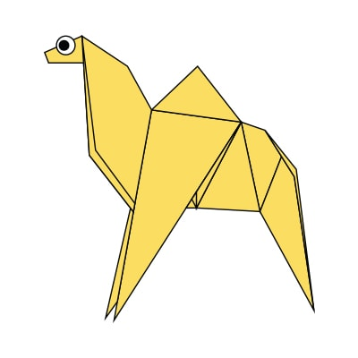

Origami Instructions and Diagrams
Step by step diagrams are probably the most popular and easiest way to follow way to show how to fold things out of paper.
Trying to find good origami instructions on the Internet can be a lot of work though. To help your search we've put
together the largest database of free origami diagrams anywhere on the Internet.
Click on pictures to see how to create them!

Chameleon
CLICK!
- Chameleon are reptiles that are part of the iguana suborder!
- Changing skin color is an important part of communication among chameleons!
- Most chameleons have prehensible tail that they use to wrap around tree branches!

Camels
CLICK!
- Camel's don't store water in their humps, it's actually all fat!
- Even if they don't store water, the can survive without water for a long time!
- Camel's can move easily across the sand becuase of it specially designed feet!